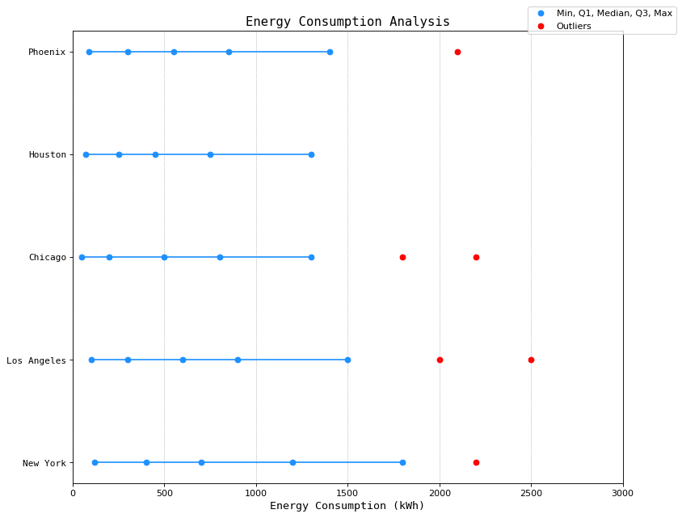
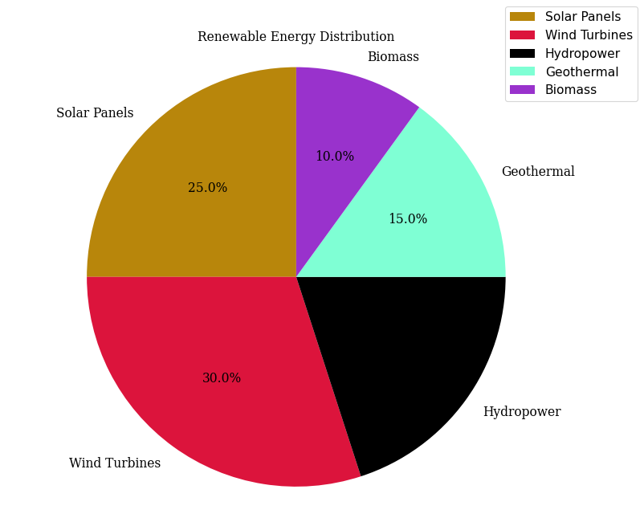
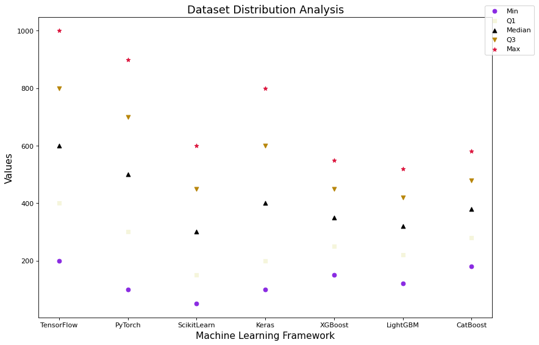

Total failure cases of factor "compare": 3
| ID | Chart | Question | Additional Information | Pitfalls | Most relevant pitfall |
404.png |
 |
What is the difference between the maximum energy consumptions of the city with the highest minimum energy consumption and the city with the lowest minimum energy consumption?
|
{
"Ground Truth": "500 kWh",
"Prediction": "700"
}
|
To address the discrepancy between the predicted answer (700 kWh) and the ground truth (500 kWh), let's first analyze the potential pitfalls in the chart: ### Potential Pitfalls: 1. **Misinterpretation of Minimum Energy Values:** The chart visually represents both the minimum and maximum energy values, but without careful attention, it can be easy to confuse which point corresponds to which value. 2. **Incorrect Identification of Cities:** The cities are listed on the y-axis, and if the order or labeling is not correctly interpreted, it could lead to selecting the wrong cities for comparison. 3. **Calculation Errors:** Even with correct data points, an arithmetic mistake during the calculation process can yield an incorrect result. 4. **Outliers Misinterpretation:** Outliers are marked separately in red, and they should not be considered when identifying the minimum or maximum energy consumption for a city. ### Most Relevant Pitfall: The most relevant pitfall here is the **Misinterpretation of Minimum Energy Values**. Specifically, the model may have incorrectly identified the city with the highest minimum energy consumption and/or the city with the lowest minimum energy consumption based on the visual representation. From the provided data: - New York has the highest minimum energy consumption at 120 kWh. - Chicago has the lowest minimum energy consumption at 50 kWh. The difference in maximum energy consumption between these two cities: - New York: 1800 kWh - Chicago: 1300 kWh Therefore, the correct difference is \( 1800 - 1300 = 500 \) kWh. The model likely misinterpreted the visual data and chose incorrect cities or values leading to the 700 kWh result. Thus, the most relevant pitfall is: <most_relevant>Misinterpretation of Minimum Energy Values</most_relevant> |
Misinterpretation of Minimum Energy Values |
852.png |
 |
Given that Solar Panels contribute 25% and Wind Turbines contribute 30%, what is the difference between their contributions?
|
{
"Ground Truth": "5%",
"Prediction": "5"
}
|
### Potential Pitfalls in the Chart Image: 1. **Missing Percent Signs**: The percentages shown in the pie chart do not include the '%' symbol. This could lead to misinterpretation, especially if someone expects the '%' symbol to be present. 2. **Label Overlap or Clarity Issues**: If any labels or text in the chart were overlapping or unclear, it might make it difficult to read the exact values. 3. **Incorrect Legend or Label Mapping**: There should be no confusion in the mapping between the labels and the corresponding slices in the pie chart. However, if there was any mismatch, it could lead to incorrect interpretation. 4. **Inconsistent Font Sizes or Colors**: Differences in font sizes or colors might make some parts of the chart harder to read, though this doesn’t seem to be an issue here. ### Most Relevant Pitfall: The most relevant pitfall causing the model's error is the **missing percent signs**. Since the model predicted "5" instead of "5%", it indicates that the model did not correctly interpret the units of the values provided in the chart. Thus, the most relevant pitfall is: <most_relevant>Missing Percent Signs</most_relevant> |
Missing Percent Signs |
997.png |
 |
Which one is larger: the Min value of Keras (100) or the Median value of XGBoost (350)?
|
{
"Ground Truth": "Median value of XGBoost",
"Prediction": "To determine which value is larger, we need to compare the specified values from the image:\n\n1. Identify the Min value for Keras:\n - The Min value for Keras is represented by a purple circle.\n - From the plot, the Min value for Keras appears to be around 100.\n\n2. Identify the Median value for XGBoost:\n - The Median value for XGBoost is represented by a black triangle.\n - From the plot, the Median value for XGBoost appears to be around 350.\n\n3. Compare the two values:\n - The Min value of Keras is 100.\n - The Median value of XGBoost is 350.\n - Clearly, 350 is larger than 100.\n\n<350>"
}
|
### Potential Pitfalls in the Chart Image: 1. **Color Misinterpretation**: The colors used for different metrics (Min, Q1, Median, Q3, Max) may not be distinct enough, leading to confusion when visually identifying them. For example, the purple circle for Min might blend with other elements if not carefully observed. 2. **Marker Overlap**: If markers representing different metrics for the same framework are too close together, they can overlap, making it difficult to distinguish between them accurately. 3. **Legend Clarity**: The legend might not be entirely clear or easily readable, leading to misidentification of which marker corresponds to which metric. 4. **Value Estimation**: Visually estimating the exact value of a point on the chart can introduce errors, especially if the gridlines or axis labels are not detailed enough. 5. **X-axis Label Alignment**: If the labels for frameworks on the x-axis are not properly aligned with their corresponding points, it could lead to associating the wrong values with the wrong frameworks. ### Most Relevant Pitfall: The most relevant pitfall here is the **value estimation** issue. Since the task involves comparing specific numerical values (Min of Keras being 100 and Median of XGBoost being 350), any inaccuracy in visually reading these values directly from the chart can lead to incorrect conclusions. Even though the difference between 100 and 350 is significant and should be easily discernible, relying purely on visual estimation without precise numerical labels can still introduce errors. <most_relevant>Value Estimation</most_relevant> |
Value Estimation |